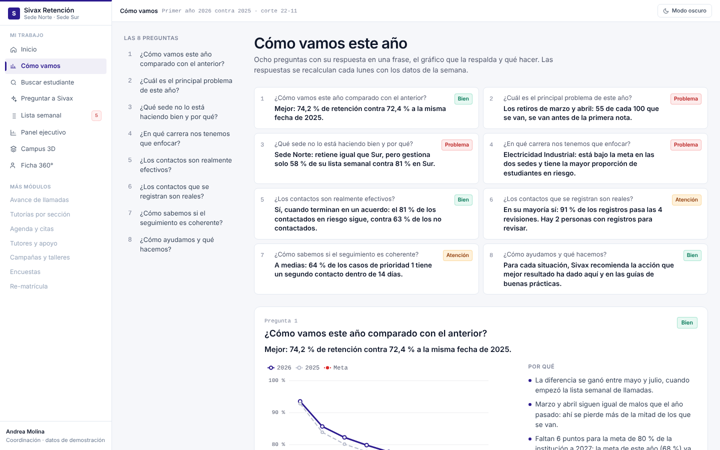
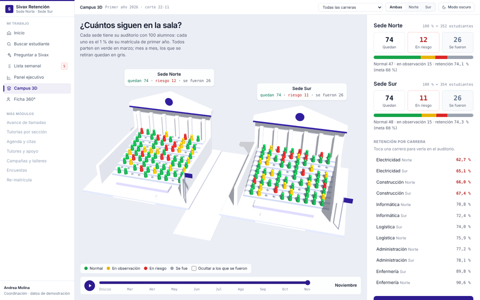
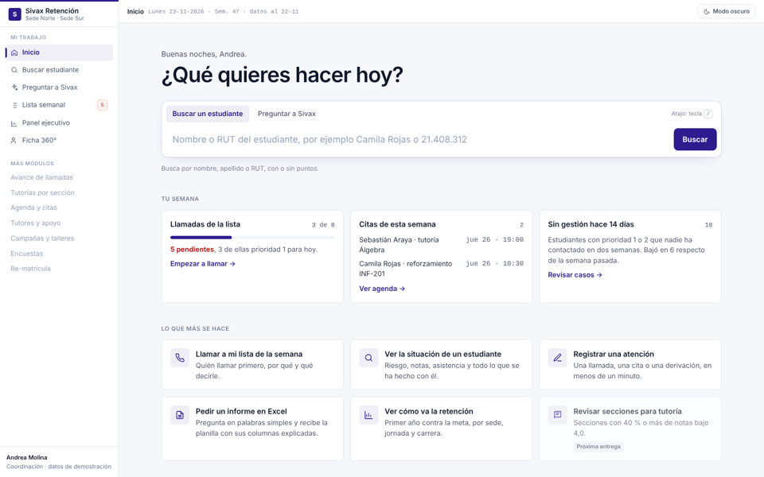
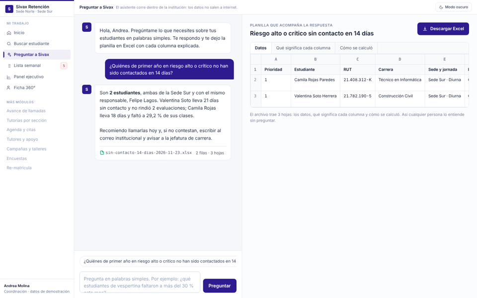
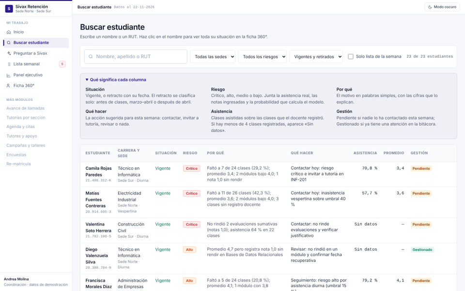
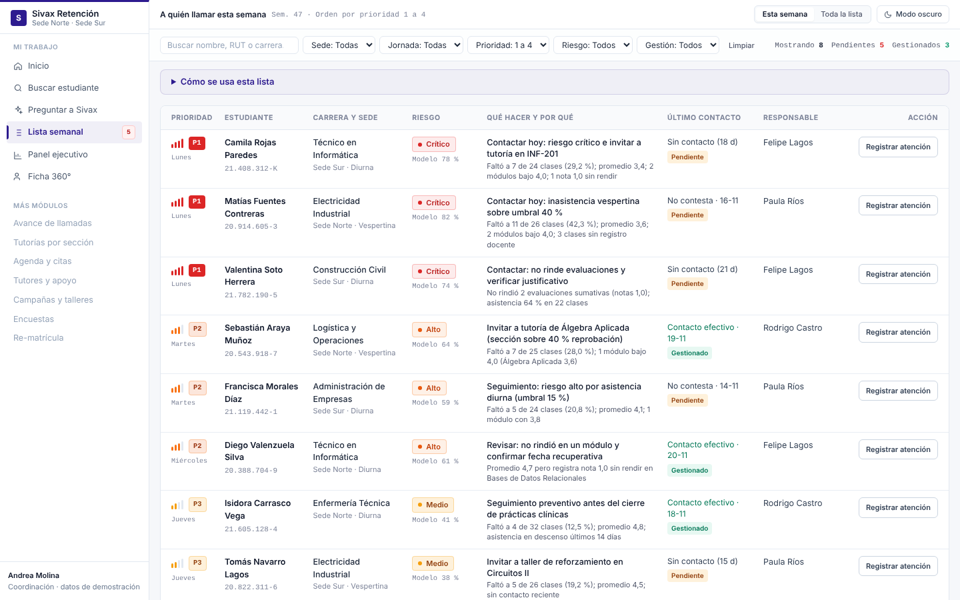
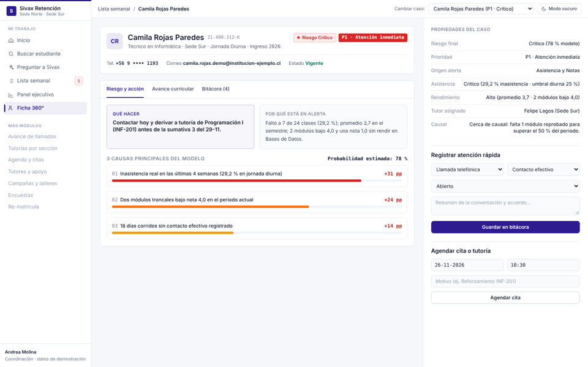
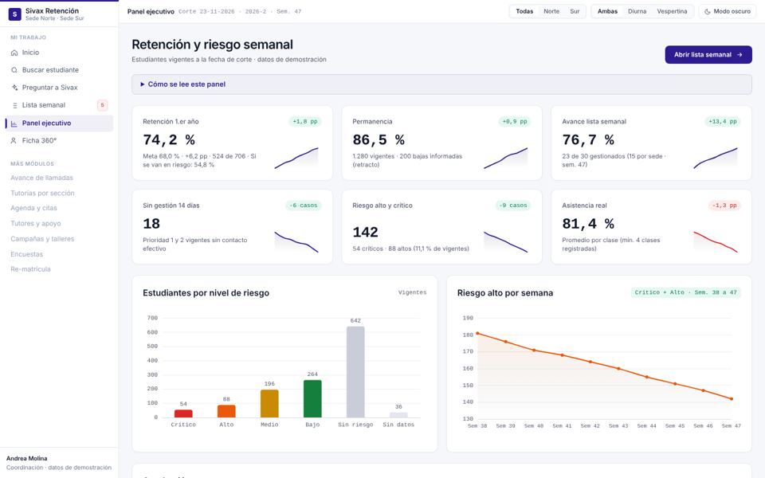
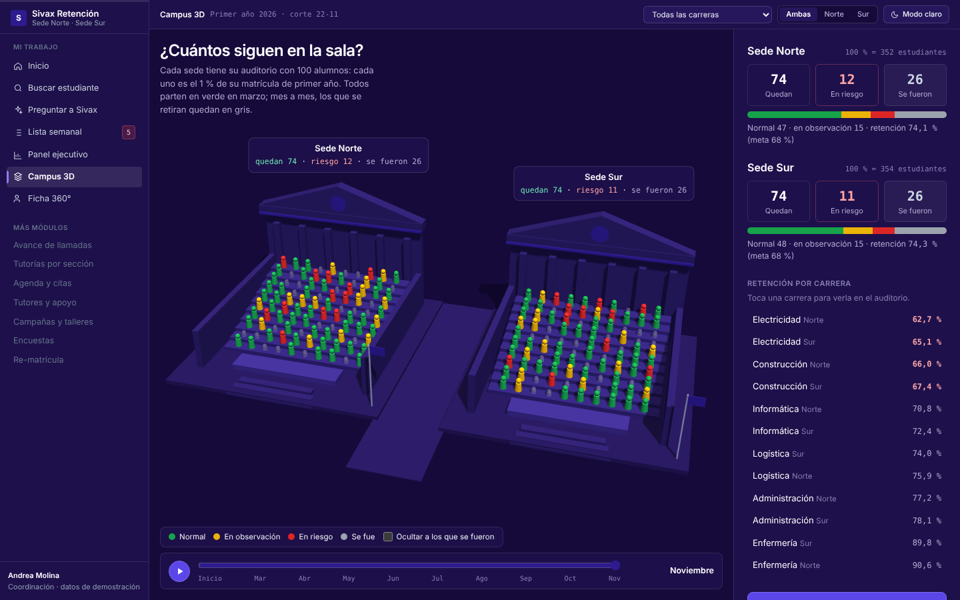
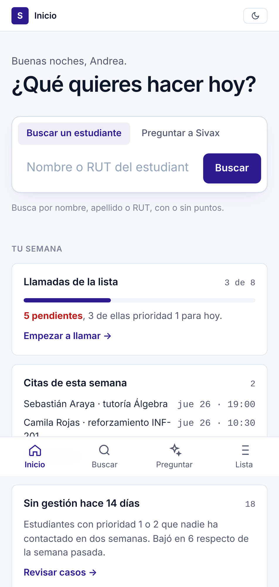

Todo parte de una pregunta: ¿qué quieres hacer hoy? Desde el inicio se busca a un estudiante, se le pregunta al asistente y se llega a cada tarea en un clic. Cada pantalla explica sus columnas y se puede usar de verdad. Todos los datos son inventados.
Este año contra el anterior, el principal problema, qué sede va mal y por qué, en qué carrera enfocarse, si los contactos funcionan y son reales, si el seguimiento es coherente y qué hacer en cada caso, con la biblioteca de buenas prácticas que lee el asistente.

Cada sede es un edificio universitario con un auditorio de 100 alumnos; cada uno es el 1 % de la matrícula de primer año. Dale play: todos parten en verde en marzo y, mes a mes, los que se retiran quedan en gris. Puedes filtrar por sede y por carrera.

Una barra grande para buscar a un estudiante o preguntarle a Sivax, tu semana en tres tarjetas y las tareas más comunes. Al final, cómo funciona Sivax en tres pasos.

Inteligencia artificial cerrada entrenada con los datos de la institución para responder preguntas de la institución. Preguntas en palabras simples y recibes la respuesta junto con un Excel de 3 hojas: los datos, qué significa cada columna y cómo se calculó.

Por nombre o RUT, con filtros de sede, riesgo y situación. Arriba se explica cada columna; el nombre lleva a la ficha completa.

Lista ordenada por prioridad 1 a 4, con qué hacer, último contacto y responsable. «Registrar atención» abre un panel lateral.

Riesgo y acción, avance curricular y bitácora, con las propiedades del caso y las acciones rápidas siempre a la vista.

Retención contra la meta, permanencia, avance de la lista, casos sin gestión, riesgo alto y asistencia, con su tendencia. Filtros por sede y jornada.


